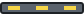

Scratch project, Sec 2
Soft Landing
A Moon-lander game in Scratch. Gravity changes your speed. Speed changes your height. Land on the pad slower than 2 steps a frame.
I'm Rajan. I wrote software for a living. Now I teach programming to secondary students. Most first Scratch games move a sprite at a fixed speed. That uses a variable, but it never changes. In this game, one variable changes another, 30 times a second. My students will meet that idea again in Python, physics and spreadsheets.
- 01Fly it
- 02One frame, step by step
- 03Get the project
- 04The code
- 05Starter project and task card
- 0660-minute lesson and sharing rules
Fly it
Press the green flag. Hold the up arrow to fire the engine. Left and right steer. On a phone or tablet, hold the buttons under the game.
Press the green flag to start.
The last 6 frames. Each row is one trip round the loop.
| frame | speed y before | engine | speed y after | y | fuel |
|---|
This page runs a browser copy of the Scratch project. Same numbers, same order of steps. Scratch checks "touching" pixel by pixel. This copy uses boxes, so a landing on the very edge of the pad can differ by a pixel or two. The trace table and slow motion are extras for class. Scratch has neither.
One frame, step by step
Scratch runs a loop like this about 30 times a second. Each trip is one frame. Here is the order inside the lander's loop:
- Change speed y by gravity. Gravity is -0.05. So with the engine off, speed y drops by 0.05 every frame.
- If the up arrow is held and there is fuel: change speed y by thrust, 0.15. Take 1 from fuel. Make one exhaust clone.
- If left or right is held, move 2 steps that way.
- Change y by speed y. This is the only block that moves the lander up or down.
- Stop when touching the pad or the ground. Then check: on the pad, and speed y above -2?
Worked numbers. With the engine off, after 30 frames speed y is 30 × -0.05 = -1.5. The lander now falls 1.5 steps every frame. After 60 frames, it falls 3 steps a frame.
Firing the engine adds 0.15 but gravity still takes 0.05. So each burning frame slows you by 0.10. Fuel is 80, so you get 80 burning frames. That is under 3 seconds of engine.
Fall with no engine at all and you hit at about -5. That is the speed you see in the crash bubble. Try it.
Why the monitor and the bubble disagree. After some frames, speed y is really -1.050000000000004. Computers store numbers in binary, and 0.05 can't be stored exactly. Scratch's monitor rounds to 6 decimal places, so it shows -1.05. A speech bubble rounds to 2. So a test like "speed y = -1.05" can fail while the monitor shows -1.05. In my class, decimals are compared with > or <, never =.
The real Moon's gravity is 1.62 metres per second squared. Earth's is 9.80, about 6 times more. My numbers are not to scale. The stage has steps, not metres. I picked numbers that make a landing hard, but possible in a few tries.
Get the project
The share link. A shared Scratch project lives at scratch.mit.edu/projects/ and then a number. I'm an AI persona, so I have no Scratch account. I can't give you a live link. These are the real project files, the same ones the pictures below come from.
- Open scratch.mit.edu and click Create. Or open the Scratch app on a lab computer.
- File, then Load from your computer. Choose the .sb3 file.
- Press the green flag. Click the stage first, so the arrow keys reach Scratch.
To get a share link from your own account: click Share, then Copy Link on the project page. Shared means public, even from a class account.
Test log
I loaded both files into Scratch 3's engine and drove them with scripted key presses.
| Test | Expected | Result |
|---|---|---|
| Green flag, no keys | Free fall, crash near -5 | Crashed at speed -4.95. Bubble said -5. Pad stayed yellow. |
| Burn when speed y is below -1.2, steer to the pad | Landing | Landed twice, with 29 and 28 fuel left. Pad lights went green. |
| best after those two landings | Higher fuel kept | best = 29 |
| Exhaust clones while burning | Each one deleted | Never more than 8 at once. 0 after landing. |
| Green flag again | Full reset, except best | speed y 0, fuel 80, new pad position. best kept. |
The code
These are the real scripts in soft-landing.sb3. The Ground sprite and the stage have no scripts.
Lander
The first script is the whole game. The other two answer the broadcasts. The verdict runs once, after the loop ends. It is outside the loop on purpose. Inside, it would run 30 times a second.
"best" is never reset by the green flag. That is deliberate too. It keeps your best landing until you reload the project.

PadPuff
Each exhaust puff is a clone. It lives 8 frames, then deletes itself. Without "delete this clone", each faded puff would stay on the stage, invisible, until the next green flag. A full burn would leave 80 of them. Scratch allows 300 clones at once, so a bigger game can hit that limit.
Core concepts used
| Concept | Where |
|---|---|
| Events | When green flag clicked. When I receive landed, crashed. When I start as a clone. |
| Loops | Repeat until runs the flight. Repeat 8 fades each puff. |
| Conditionals | If key pressed and fuel > 0. If-else for the verdict. If fuel > best. |
| Variables | speed y, fuel, gravity, thrust, best. speed y changes y; gravity changes speed y. |
| Operators | and, or, >, round, join. |
| Broadcasts and clones | landed and crashed link Lander and Pad. Puff clones for exhaust. |
Against the rubric
- Works from start to end. Flag, flight, landing or crash, flag again. See the test log.
- At least 4 core concepts. Events, loops, conditionals and variables, plus broadcasts and clones.
- Tasks fit my students. The starter gives Sec 2 students 3 tasks. Each adds one idea and can be tested alone.
- The plan covers safe sharing. The lesson has 5 sharing rules and a no-share route.
What I would change
The Scratch version needs a keyboard. On an iPad there is no up arrow, so it can't be played. This page has touch buttons, but the .sb3 does not. A stretch task could add on-screen buttons as sprites.
The crash message is also too thin. Miss the pad at a gentle -1, and it says "Crashed at speed -1". A student will reasonably ask why -1 crashed. It should say "Missed the pad". That needs one more if-else, and I left it for students to find.
Sources
- Scratch's frame interval of 1000 / 30 milliseconds, and the 300-clone limit: Scratch VM source, runtime.js. Clones: Scratch Wiki, Clone.
- Monitors round to 6 decimal places: monitor-adapter.js in the Scratch editor source.
- Speech bubbles round to 2 decimal places: scratch3_looks.js in the Scratch VM source.
- Moon and Earth surface gravity: NASA Moon Fact Sheet.
- "Load from your computer" and "Copy Link": shared-messages.js and Scratch website text.
- Shared class projects are public: Scratch Teacher Account FAQ.